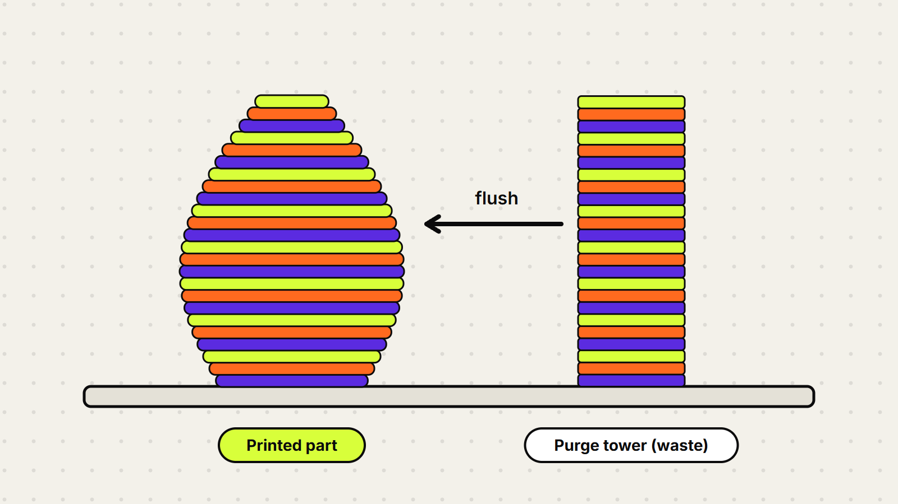
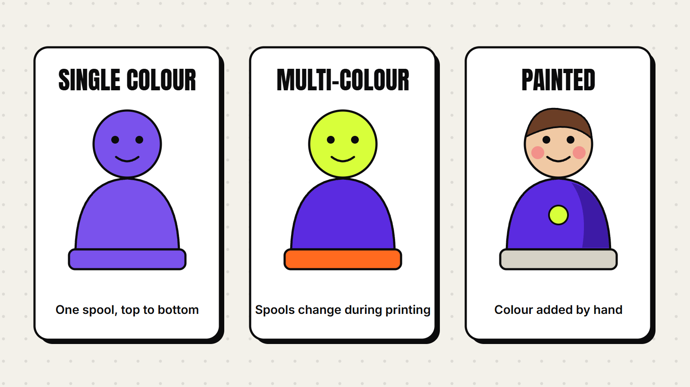

Colour is one of the first choices people make, and it changes more than the look. It can change how long a piece takes to make, how much material is wasted, how the part is designed, and what it costs. This guide explains the three common routes, single colour, multi-colour, and painted, so you can decide where extra colour is worth it.
One spool of filament is used from the first layer to the last. It is the most direct way to print, and for that reason the quickest and most economical.
Why it works well:
The finish depends on the filament. Matt filaments hide layer lines better. Glossy and silk filaments catch the light and show curves, along with any small flaws.
Two or more filaments are used in one print. Depending on the machine and the design, this happens in different ways.
The printer switches spool at a chosen layer. Everything below is one colour and everything above is another. This is ideal for raised lettering on a name plate or a coloured top band. It needs only a few changes, so it adds relatively little.
For logos, characters, and patterns, the printer may need to switch colours many times on every layer. Each change means pulling one filament out of the nozzle, loading the next, and pushing out the mixed plastic until the new colour runs clean. That flushed material is waste, often collected as a small tower or purge pile beside the part.
Each colour is printed as its own piece and then fitted or glued together. It avoids most of the purge waste and gives crisp boundaries, but needs a design with clearances and some assembly.

The part is printed in one colour, then sanded if needed, primed, and painted by hand or by spray. Paint allows shading, gradients, tiny details, and exact colours that filament does not come in.
Trade-offs: painting is slow handwork, results vary with surface preparation, and paint can chip or rub off on pieces that are handled. At Akrinity, painting is not part of the standard price. Where we offer it, it is made to order and quoted separately.
| Question | Single colour | Multi-colour print | Painted |
|---|---|---|---|
| Cost | Lowest | Higher, rises with colour changes | Depends on handwork |
| Production effort | Least | More | Printing plus finishing |
| Fine colour detail | None | Good for clear shapes | Best for shading and small detail |
| Wear | Colour goes right through | Colour goes right through each section | Surface layer can chip |
| Waste | Low | Can be significant | Low plastic waste, uses paint and primer |

Tip: Screen colours and filament colours rarely match exactly. If a brand shade matters, ask which filament colours are available and approve a sample before ordering a batch.
Take a desk name plate with raised letters. In one colour, the name is read by light and shadow, which looks calm and costs the least. With a colour change by height, the base prints in black and the letters in white: the contrast is strong and there are very few changes. With a logo in four colours inside the same layers, the printer swaps many times, wastes more plastic, and needs more care. The shape is identical in all three. Only the colour plan differs, and so does the price.
Before you ask for more colours, ask what each one adds. Two colours used well often read better from across a room than five.
Some products offer a choice of colour options, and you will see it on the product page where it applies. Multi-colour takes longer and may cost more, so we confirm any extra cost before payment. For custom work, describe the colours in the notes of the quote form and attach a picture showing where each one goes.
For help choosing the plastic behind the colour, read which filament suits your part. Colour ranges differ between materials, so choose both together.